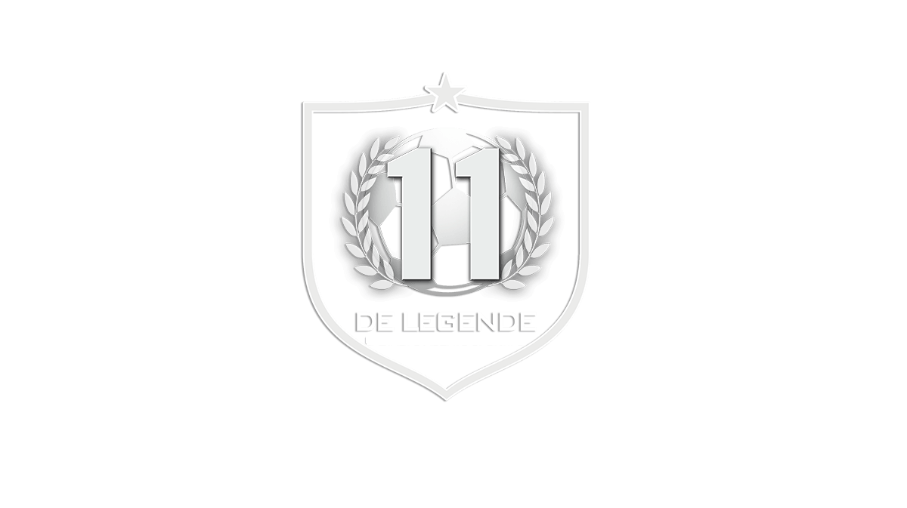
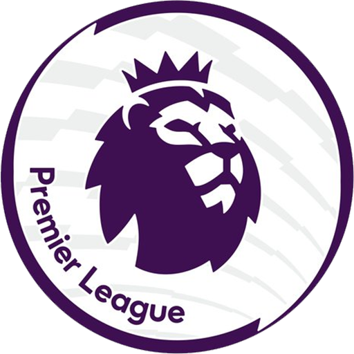

<!DOCTYPE html>
<html lang="fr">
</html>
    <head>
        <meta charset="utf-8" >
        <link rel="stylesheet" href="style.css" />
        <title>Mon 11 Type</title>
    </head>
  <body>

    <header class="menu">
      <a id="" href="ligue1.html">
        
      </a>

      <nav>
          <ul>
              <li> 
                  
                  <a class="elMenu" href="ligue1.html">Ligue 1</a>
              </li>
              <li> 
                
                <a class="elMenu" href="premiereLeague.html">Premier league</a>
              </li>
              <li> 
                
                <a class="elMenu" href="liga.html">Liga</a>
              </li>
              <li> 
                
                <a class="elMenu" href="bundesliga.html">Bundesliga</a>
              </li>
              <li> 
                
                <a class="elMenu" href="serieA.html">Serie A</a>
              </li>
          </ul>
      </nav>
      
    </header>

        <section>
                <article>
                  <h3>Gardien: Peter Schmeichel </h3>
                 <p>  
                   <br/> <br/>
                   Peter Bolesław Schmeichel, on se souvient surtout de lui pour ses années les plus réussies au club anglais de Manchester United, pour lesquelles il a mené 
                   à la victoire en finale de l'UEFA Champions League 1999 pour compléter le triplé, et à l'UEFA Euro 1992 avec le Danemark. Né à Gladsaxe, Copenhague, Schmeichel est connu pour 
                   son physique intimidant - 1,91 m de haut et près de 100 kg les jours de match - et porte un maillot de football XXXL spécialement conçu. En tant que compétiteur féroce, il est connu 
                   pour ses critiques bruyantes et sans faille des erreurs que ses défenseurs reconnaissent. Insolite pour un gardien de but, Schmeichel a marqué 11 buts au cours de sa carrière, dont un 
                   pour l'équipe nationale. Il est également le joueur le plus populaire de l'équipe nationale danoise, avec 129 matchs de 1987 à 2001. En plus du championnat Euro 92, il a joué pour son 
                   pays dans la Coupe du Monde de la FIFA 1998 et trois autres championnats d'Europe.
                   Il a aidé Manchester United à remporter cinq titres de Premier League et a concouru pour l'équipe nationale 
                   danoise de 1987 à 2001. Il a été quatre fois gardien de but de l'UEFA de l'année et a également été élu par l'IFHS meilleur gardien de but du monde pendant deux de ces années.
                   
                  
           </p>
          </article>
          
          <article>
            <h3>Latéral droit: Gary Neville </h3>
            <p>  
            <br/> <br/>
            Entre 1992 et 2011, il a pris part à 602 matchs officiels sous le maillot des Red Devils, ce qui fait de lui le cinquième joueur le plus capé de l'histoire du club mancunien. 
            Il a été capitaine de Manchester United entre 2005 et 2010. Gary Neville remporte de nombreux titres avec Manchester, dont la Ligue des champions, à deux reprises (1999 et 2008).
            Durant son règne a Manchester Gary Neville gagnera aussi 1 Coupe Intercontinentale, 1 Mondial des Clubs, 9 titres de Champion d'Angleterre,
            2 Coupe d'Angleterre, 1 Coupe de la Ligue et 1 Charity Shield.
            
            
            
       </p>
      </article>
      
      <article>
        
        <h3>Latéral gauche: Ashley Cole </h3>
        <p> 
        <br/> <br/>
        Ashley Cole est formé à Arsenal en Grande-Bretagne. En 1999 alors qu’il n’a que 18 ans, il y fait ses débuts professionnels lors d’un match de la Coupe de la Ligue anglaise. 
        Il est prêté la saison suivante à Crystal Palace toujours en Premier League anglaise où il dispute 14 rencontres avant de revenir au bercail. 
        Cole signe son premier contrat professionnel en 2000 avec les Gunners et dispute sa première rencontre sous les ordres d’Arsène Wenger lors de la saison 2000-2001. 
        Il effectue également ses premiers pas sous le maillot de l’Angleterre le 28 mars 2011 et dispute la Coupe du Monde 2002 en tant que titulaire mais échoue dès le premier tour de la compétition. 
        Il est également dans le onze de base lors de l’Euro 2004. En club, après un total de 229 matchs toutes compétitions confondues avec le club de Londres, Cole décide de changer d’air et rejoint l’ennemi juré 
        Chelsea alors qu’il était annoncé avec insistance du côté du Real Madrid en remplacement du pré-retraité Roberto Carlos. Il débarque à Chelsea en 2006 mais tarde à faire son trou. Il faut que José Mourinho soit 
        aux commandes pour qu’il soit titulaire lors de la saison 2007-2008. Il remporte ensuite toutes les compétitions possibles avec Chelsea et y dispute pas moins de 330 rencontres. Voulant prolonger son contrat de deux saisons avec Chelsea, 
        le club ne lui propose qu’un an supplémentaire. Il stoppe entre-temps sa carrière internationale lorsqu’il apprend qu’il n’est pas dans les 23 pour la Coupe du Monde 2014 au Brésil. Avec Chelsea, sentant une impasse, il décide alors 
        de ne pas reconduire son contrat et rejoint gratuitement la Roma à 33 ans pour une dernière aventure dans un top club.
        Au total il gagnera 1 Champions League, 1 Europa League, 3 Championnats d'Angleterre, 7 Coupes d'Angleterre	et 3 Community Shield.	  
          
          
         
         </p>
        </article>
      
      <article>
          
        <h3>Défenseur Central: Rio Ferdinand </h3>
        <p> 
        <br/><br/>
   Rio Ferdinand débute sa carrière à West Ham et se taille rapidement une réputation de grand arrière central. 
   Il sera même nommé en 1998 joueur de l'année du club à seulement 19 ans.
   Il débarque alors à Leeds UTD et devient le défenseur le plus cher du Monde a cet époque avec un transfert estimé à 18 millions de livres.
   Il trouve vite ses marques avec les "Whites" malgré des débuts compliqués. Auteur de deux bonnes saisons à Leeds, il portera le brassard de capitaine en 2001 après le départ de Lucas Radebe. 
   Il se révèle sur la scène internationale en étant retenu dans la charnière centrale de l'équipe d'Angleterre pour la Coupe du Monde 2002. 
   En proie à des difficultés financières,Leeds est contraint de vendre Rio à Manchester United un mois plus tard pour un nouveau montant record à l'époque, soit la coquette somme de 34 millions de livres.
   Par la suite il deviens un joueur clé du succès des Red Devils à la fin des années 2000, formant durant trois années la meilleure charnière centrale du Monde avec Nemanja Vidić. 
   Auteur de son premier but en 2005 face à Wigan, il marque également le but décisif du dernier titre de l'ère Ferguson en 2013. L'international anglais remporte au total six titres de champion d'Angleterre 
   ainsi que la Ligue des Champions en 2006 avec les Red Devils, mais l'une de ses plus grandes fiertés est d'avoir porté le brassard lors de la finale de C1 perdue en 2008 face à Chelsea. Pressenti pour être 
   capitaine de la sélection anglaise pour la Coupe du Monde de 2010, il a finalement dû déclarer forfait pour la compétition en raison d'une blessure. 
   
          </p>
          </article>
          
          <article>
        <h3>Défenseur Central: John Terry </h3>
        <p> 
        <br/><br/>
        Joueur emblématique de Chelsea, Terry porte le brassard de capitaine des Blues entre 2004 et 2017. Il remporte plusieurs trophées comme le Championnat d'Angleterre à cinq reprises,4 titres de Coupe d'Angleterre, 3 Coupe de la Ligue, 
        2 Community Shield. En Europe, 1 Ligue Europa et 1 Ligue des champions. Il est notamment finaliste de la Coupe du monde des clubs en 2012.
        En 2005, il est élu meilleur joueur du Championnat d'Angleterre et meilleur défenseur en 2004, 2005, 2006 et 2015. Il est également Meilleur défenseur de l'année UEFA par 3 fois et dans l'équipe type du monde par FIFA entre 2005 et 2009
        pour ses prestations dans les compétitions européennes. Il est considéré comme l'un des meilleurs défenseurs de sa génération.
        Terry participe au Championnat d'Europe en 2004 et 2012 ainsi qu'à la Coupe du monde en 2006 et 2010. Capitaine de la sélection anglaise entre 2006 et 2008 puis entre 2010 et 2012, il met un terme à sa carrière internationale en septembre 2012.
        Il termine sa carrière de joueur à Aston Villa avant de prendre sa retraite sportive à l'issue de la saison 2017-2018.
        
        
        </p>
        </article>
      
      <article>
        <h3>Millieu axial: Frank Lampard</h3>
        <p> 
        <br/><br/>
        Lampard commence sa carrière professionnelle à West Ham United. Il intègre l'équipe première très jeune et aide le club à atteindre la cinquième place du championnat en 1999, le meilleur classement de l'histoire du club.
        En 2001, il est transféré au voisin londonien Chelsea. Rapidement intégré dans l'effectif, il y devient un cadre essentiel de l'équipe, manquant très peu de matchs et marquant souvent entre quinze et vingt buts par saison. Il est élu « Joueur anglais de l'année » deux fois de suite en 2004 et 2005. 
        Il est classé deuxième au Ballon d'or en 2005. Avec les Blues, le milieu remporte notamment trois fois le championnat d'Angleterre ainsi que la Ligue des champions en 2012. Il inscrit en tout 211 buts durant son passage entre 2001 et 2014, faisant de lui le meilleur buteur de l'histoire du club.
        Il est généralement considéré comme étant le plus grand joueur de l'histoire de Chelsea et comme l'un des meilleurs milieux de terrain de sa génération.
        Laissé libre par Chelsea en 2014, Lampard s'engage alors avec Manchester City où il évolue en 2014-2015 avant de partir dans le club filiale de New York City où il passe une saison et demie avant de prendre sa retraite en 2017.
        Lampard est sélectionné à 106 reprises avec l'équipe nationale anglaise entre 1999 et 2014, et marque 29 buts. Il participe notamment à l'Euro 2004, durant lequel il est nommé dans l'équipe du tournoi. Il est le meilleur buteur de l'Angleterre lors des qualifications pour la Coupe du monde de 
        2006 et participe à trois Coupes du monde dans toute sa carrière internationale.
        
        </p>
        </article>
      
      <article>
        <h3>Millieu axial: Ryan Giggs </h3>
        <p> 
        <br/><br/>
        Ryan Giggs apparait pour la première fois sous le maillot de Manchester United. Il joue au poste de milieu latéral gauche, bien qu'il soit de plus en plus utilisé dans un rôle plus axial dans ses dernières années. 
        Au niveau international, il joue pour la sélection du pays de Galles dès ses dix-sept ans faisant de lui le plus jeune joueur à représenter son pays. Il prend sa retraite internationale le 2 juin 2007. À l'occasion des Jeux Olympiques de 2012, Giggs est sélectionné 
        parmi les trois joueurs de plus de 23 ans pour représenter la Grande-Bretagne, et en est le capitaine.
        Ryan Giggs a longtemps été le joueur le plus titré de l'histoire du football européen, avec 35 titres à son actif. Il détient également le record de matchs officiels de Manchester United. Pendant sa carrière, 
        il remporte notamment 13 Premier League, 4 Coupes d'Angleterre, 3 Coupes de la Ligue anglaise, ainsi que 2 Ligues des Champions. Lors de ses dernières années, Ryan Giggs est le capitaine de l'équipe à de nombreuses reprises, particulièrement 
        durant la saison 2007-2008, à la suite des blessures à répétition de Gary Neville. Il fait partie des rares joueurs de champ à avoir remporté le championnat d'Angleterre lors de trois décennies différentesnote 1.
        Ryan Giggs remporte de nombreuses distinctions personnelles. Il est le premier joueur dans l'histoire à remporter deux fois consécutivement le trophée du PFA Young Player of the Year, mais doit attendre 2009 pour être désigné Joueur de l'année PFA. 
        En 2003, il est désigné parmi l'équipe de la décennie 1992-2002 de Premier League, et en 2007 parmi l'équipe du centenaire de la PFA, de même que parmi l'équipe du centenaire de la FA Cup. En 2011, le Galois est élu meilleur joueur de tous les temps de Manchester United par les supporters des Red Devils. 
        Il détient le record du nombre de passes décisives de l'histoire de la Premier League (162 passes).
        
        
        </p>
         </article>
      
      <article>
        <h3>Millieu axial: Steven Gerrard </h3>
        <p> 
        <br/><br/>
        Gerrard débute à Liverpool, assure sa place en équipe première et succède à Sami Hyypiä comme capitaine de l'équipe. Son palmarès compte 2 coupes d'Angleterre, 3 coupes de la Ligue, 1 Ligue des champions, 1 Coupe UEFA et 2 Supercoupes d'Europe. En 2005, Gerrard est troisième au vote pour le Ballon d'or.
        Gerrard fait ses débuts internationaux en 2000 et représente l'Angleterre aux championnats d'Europe 2000 et 2004, ainsi qu'à la Coupe du monde 2006 où il est le meilleur buteur de l'équipe avec deux buts. Gerrard obtient le brassard de capitaine de son pays pour la première fois à la Coupe du monde 2010 
        en l'absence de l'habituel capitaine Rio Ferdinand, qui rate le tournoi pour cause de blessure. Il est à nouveau nommé comme capitaine de l'Angleterre pour l'Euro 2012.
        Gerrard est considéré comme l'un des plus grands footballeurs anglais de tous les temps. Sa vision du jeu, ses passes, dont ses transversales, ses frappes puissantes, son panache et sa loyauté envers Liverpool font de lui une légende chez les Reds. 
        Il est arrivé premier devant Kenny Dalglish des « 100 joueurs qui ont secoué le Kop » , un vote des supporteurs de Liverpoo. Zinédine Zidane déclare en 2009 qu'il considère Gerrard comme l'un des meilleurs footballeurs au monde. 
        En 2010, The Guardian nomme Gerrard dans son onze idéal qui compile les plus grands footballeurs de tous les temps dans une seule équipe.
        Alors que l'équipe d'Angleterre a été éliminée dès le premier tour de la coupe du monde 2014 au Brésil, Steven Gerrard décide le 21 juillet 2014 de mettre un terme à sa carrière internationale afin de se consacrer seulement à son club de Liverpool qui retrouve la Ligue des champions. 
        Auteur de 21 buts en 114 sélections, « Stevie G » se place 4e des joueurs les plus capés d'Angleterre derrière David Beckham (115), Wayne Rooney (119) et Peter Shilton (125). Michael Owen a tenu a rendre hommage à son ancien coéquipier à Liverpool durant six années (1998-2004) : 
        « Dans ma carrière, j'ai eu la chance de jouer aux côtés des plus grands footballeurs de ma génération, et le meilleur compliment que je puisse faire à Stevie, c'est qu'à mes yeux, il est le deuxième meilleur joueur derrière Zinédine Zidane en termes de classe mondiale », a expliqué l'ancien attaquant.
        
        
        </p>
        </article>
      
      <article>
        <h3>Attaquant Droit: Alan Shearer </h3>
        <p> 
        <br/><br/>
        Auteur de plus de quatre cents buts au cours de ses dix-huit ans de carrière au plus haut niveau, Shearer est l'un des buteurs les plus prolifiques de l'histoire du football anglais. Il est le meilleur buteur cumulé du championnat d'Angleterre de football depuis la création de la Premier League en 1992 
        et le 5e meilleur buteur de l'histoire du championnat d'Angleterre. Capitaine de la sélection nationale, il a été tout aussi efficace sous son maillot, en inscrivant 30 buts en 63 sélections.
        À une époque où les footballeurs changent souvent de clubs, Alan Shearer, n'a joué que dans trois clubs différents : Southampton FC, avec lequel il fait des débuts remarquables en réussissant, à l'âge de dix-sept ans seulement, un coup du chapeau contre Arsenal, aux Blackburn Rovers, 
        où il se forge une réputation de chasseur de buts, et enfin à Newcastle United, où Shearer, supporter du club depuis son enfance, a toujours souhaité évoluer. Il signe dans ce club en 1996 malgré des sollicitations de formations étrangères plus réputées et y devient le meilleur buteur de tous les temps avec un total de deux cent six buts inscrits.
        Son palmarès n'est pas très important, puisqu'il ne compte qu'un seul titre de champion d'Angleterre remporté en 1995 avec Blackburn, mais il compte tout de même 3 titres honorifiques de meilleur buteur du championnat d'Angleterre, remportés consécutivement entre 1995 et 1997. Victime de graves blessures à répétition, 
        il peinera par la suite à retrouver le niveau qui était le sien dans les années 1990, mais poursuivra sa carrière jusqu'en 2006.
        
        </p>
        </article>
      
      <article>
        <h3>Attaquant gauche: Cristiano Ronaldo </h3>
        <p> 
        <br/><br/>
        Arrivé à 11 ans au Sporting, Cristiano Ronaldo a été lancé dans le grand bain le 29 septembre 2002 dans le championnat portugais. Lors de sa première saison, il effectue 25 matchs et marque 3 buts. C'est lors d'une rencontre face à Manchester United qu'il tape dans l'œil de Sir Alex Ferguson l'entraîneur mancunien. 
        Il signe alors à MU le 12 août 2003 pour 18 millions d'euros. Il cartonne littéralement en Premier League pendant ces 6 années passées à Manchester. En 2008 il obtient d'ailleurs le Ballon d'Or. En 290 matchs avec le maillot des Red Devils, le portugais marque à 118 reprises. 
        C'est alors que le 26 juillet 2009, Cristiano Ronaldo part pour la somme record de 94 millions d'euros qui fait de lui le joueur acheté le plus cher dans toute l'histoire du football, au Real Madrid.  Il lance alors sa concurrence directe avec la star du FC Barcelone, Lionel Messi. Cr7 remporte notamment 
        la Ligue des Champions en 2014 et le Ballon d'Or en 2013 et 2014.
        
       </p>
        </article>
      
      <article>
        <h3>Buteur: Thierry Henry</h3>
        <p> 
        <br/><br/>
        C'est à Arsenal FC que Thierry Henry se révèle et devient l'un des meilleurs attaquants de sa génération. Jusqu'alors considéré comme un ailier de débordement, Henry évolue désormais dans l'axe de l'attaque et devient un redoutable chasseur de buts.
        Il est élu meilleur joueur de l'histoire d'Arsenal par les supporters du club le 19 juillet 2008 et joueur étranger préféré de l'histoire de la Premier League lors d'un sondage organisé par Barclays en décembre 2008. En octobre 2014, il est désigné deuxième meilleur joueur de l'histoire de la Premier League, 
        derrière Ryan Giggs, par les spécialistes du quotidien britannique The Telegraph46. Le 9 décembre 2011, une statue en bronze du français est inaugurée aux abords de l'Emirates Stadium47. Durant ces huit années passées sous les couleurs d'Arsenal, Thierry Henry dispute 369 matchs pour 226 buts (soit 0,61 but par match en moyenne).
        
        
        </p>
        </article>
        </section>
      </body>
      </html>